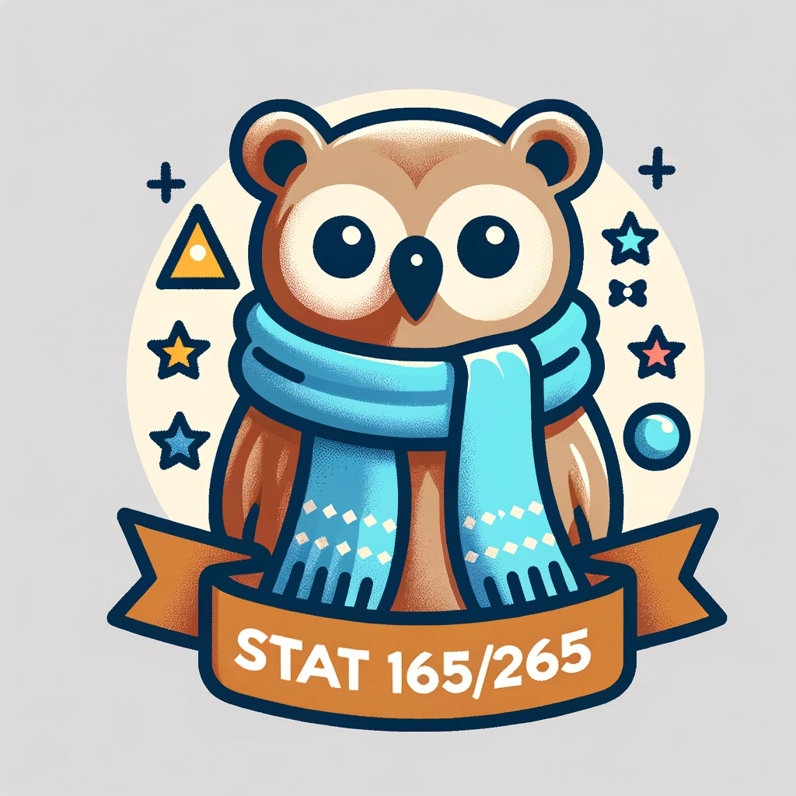

About
Table of contents
About
Forecasting has been used to predict elections, climate change, and the spread of COVID-19. Poor forecasts led to the 2008 financial crisis. In our daily lives, good forecasting ability can help us plan our work, be on time to events, and make informed career decisions. This practically-oriented class will provide students with tools to make good forecasts, including Fermi estimates, calibration training, base rates, scope sensitivity, and power laws. We'll discuss several historical instances of successful and unsuccessful forecasts, and practice making forecasts about our own lives, about current events, and about scientific progress.
Prerequisites: One of Stat 134, Data/Stat C140, EECS 126, Math 106, IND ENG 172, or
equivalent; and familiarity with Python (Pandas); or consent of instructor.
Strongly Recommended: Compsci
61A, Data/Compsci C88C, or equivalent.
This is the website for the Spring 2025 iteration of the class. Versions of this site from previous
iterations of this course can be found below:
Spring 2024 (Stat 165/265)
Spring 2023 (Stat 157/260)
Spring 2022 (Stat 157/260)
Stat 165 and Stat 265 will share the same lectures, but the assignments and work will be different.
Weekly homework and forecasting exercises will be assigned in both classes but homework in Stat 265
will assume a greater degree of mathematical maturity.
For Stat 165 students, there will be a quiz at the beginning of class on most Fridays, which covers
the reading from that week. It will generally be short (1-2 multiple-choice questions). The two
quizzes where you got the lowest grade will be dropped. Students in Stat 265 will not be
assigned
quizzes. On Fridays, students in both Stat 165 and Stat 265 will have an in-class worksheet due that
is graded for completion.
Instead of exams, both classes will require a final project. The final project for Stat 265 students
will be more in-depth and research-focused. Students in Stat 265 will propose a research project to
the staff for approval. The main criterion is that the project should consider some novel facet of
forecasting such that it could in principle be extended to a publishable paper. For instance, some
past projects involved a novel analysis of scoring rules for forecasts, and a user interface study
for forecasting software.
All students are given up to 5 total slip days across the semester to turn in homework late. It is
up to the student to notify course staff in advance if they plan on using slip days for homework 1
(unless they have DSP accommodations) since not completing homework 1 on-time will result in you
getting dropped. These slip days are intended to be used for extenuating circumstances, so we
recommend students only use them when
necessary. After that, assignments are penalized 20% per day and drop to 0 after 3 days late. For
Friday worksheets, if a student contacts us in advance with a reason for missing discussion, they
can complete the worksheet on their own and turn it in online. For weekly forecasting exercises,
since they concern current events that happen shortly after the assignment is due, we are unable to
accept late submissions. However, students will be given extra credit opportunities to make up for
missed assignments not covered by the policies above.
Please email forecasting-class-staff@lists.berkeley.edu if you need any particular accommodations,
even if you have already requested services on your DSP portal.
EdStem
You can join the EdStem here: https://edstem.org/us/join/SEbJp7.
Lecture
MW1-2PM, in Hearst Mining 390
Discussion
F1-2PM, in Wheeler 212
This class will be heavily disussion-based and participation will count towards the grade. Monday and Wednesday lectures will be a combination of traditional lecture and group activities, while most Fridays will be student-led small group discussions with instructors helping to facilitate.
Instead of exams, there will be a final project. Students in Stat 265 will be expected to do a more substantial project.
There will be no official lab / discussion block, but some homework will involve Pandas programming.
Office Hours
Our office hour schedule this semester will be:
- Will Fithian (Lead Instructor): 301 Evans, Wednesday 2-3pm
- Mawil Hasan (TA): Monday 5-6pm (remote; location TBD), Tuesday 3-4pm (in-person; location TBD)
- Erik Jones (TA): Thursday 7-8pm (remote; Zoom link)
- João Vitor Romano (TA): Friday 3-5pm (in-person; 434 Evans). 4-5pm will be reserved for Stat 265
students.
Grading
Stat 165 Stat 265 Grades will be based on a combination of: - Homework (35%)
- Discussion participation (15%)
- Forecasting performance (20%)
- Quizzes (10%)
- Final project (20%)
Grades will be based on a combination of: - Homework (40%)
- Discussion participation (15%)
- Forecasting performance (20%)
- Final project (25%)
As a baseline, we expect that the forecasts that ChatGPT gives to result in roughly a B- on the forecasting competition section of your grade.
Textbook
Steinhardt, J. (2024). Forecasting
Course Staff
To reach course staff, you can email forecasting-class-staff@lists.berkeley.edu. If possible, please avoid emailing professors or GSIs directly!
